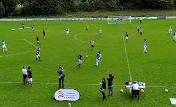

El fútbol a tres bandas es una variación del fútbol que se juega con tres equipos en lugar de los dos habituales. Fue ideado por el situacionista danés Asger Jorn para explicar su lógica trivalente, su refinamiento del concepto marxista de la dialéctica, así como para interrumpir la propia idea del fútbol original. Los partidos se juegan en un campo hexagonal,1 y puede ser adaptado a otras clases de deportes. A diferencia que en el fútbol convencional, donde el ganador se determina por la puntuación más alta de los dos equipos, por el contrario, un recuento se toma con el número de goles en contra y el equipo ganador es el menos goleado. El juego pretende deconstruir la naturaleza confrontacional y bipolar del fútbol convencional como una analogía de la lucha de clases en que el árbitro se erige como un representante del aparato del Estado y los medios de comunicación, y donde se convierte en un árbitro neutral en el proceso político de la lucha de clases en curso.
Fue promovido en Inglaterra, Escocia, Italia, Serbia, Polonia y Austria por la Liga de Fútbol a Tres Bandas por Luther Blissett. El primer partido conocido, jugado el 28 de mayo de 1993, fue organizado por la Asociación Psicogeográfica de Londres en el Glasgow Green como parte de la Escuela Anarquista de Verano de Glasgow. Los participantes incluyeron a Richard Essex, Stewart Home y los miembros de The Workshop for Non-Linear Architecture. El fútbol a tres bandas se ha practicado en varias sesiones de entrenamiento de la Asociación de Astronautas Autónomas en Inglaterra, Francia, Italia y Austria, incluida en la Primera Conferencia Intergaláctica en Viena (1997), la Segunda Conferencia Intergaláctica en Bolonia (1998), el Espacio 1999 en Londres, o como un evento de protesta en Parc de La Villette en París durante la Copa Mundial de Fútbol de 1998. En agosto de 2009 un partido de fútbol a tres bandas se jugó en Alytus como parte de los eventos de Art Strike realizados allí. Stewart Home actuó como árbitro.2 El 31 de octubre de 2009, una competición de fútbol a tres bandas se organizó en Lyon durante la Bienal de Arte Contemporáneo. El evento subversivo fue una confrontación del sentido no espectacular del juego original con el título principal de la Bienal, Le Spectacle du Quoditidien. La manifestación tuvo lugar en el Stade Laurent Gérin, Vénissieux, y fue organizado por la asociación Pied La Biche.3 Un partido de fútbol a tres bandas, con cada equipo representando uno de los principales partidos políticos, se jugó el 2 de mayo de 2010 en Haggerston Park, Londres, en el período previo a las elecciones generales del Reino Unido. Este partido fue organizada por Whitechapel Gallery en conjunto con Philosophy Football FC. El partido fue ganado por el Philosophy Football FC, en representación del Partido Laborista, quien terminó sin recibir goles, mientras que los conservadores admitieron 2, y los Lib Dems 3. Más tarde, Philosophy Football FC organizó y compitió en el primer partido de fútbol a tres bandas disputadó en España, el 7 de mayo de 2011, que fue relatado por el periodista Sid Lowe en el podcast de fútbol del The Guardian. El equipo de Lowe ganó 3-5-5. El Deptford Three Sided Football Club (D3FC) fue fundado en febrero de 2012 para conmemorar el 50 aniversario de la invención del juego por Jorn en su libro Naturens Orden de 1962.4 Los juegos se celebran cada dos domingos entre D3FC y otros clubes locales en el Deptford Green Hexagon en Fordham Park, en el sudeste de Londres.5 En un evento llamado "Pensando el Fútbol" en junio de 2007, con el objetivo de reflexionar sobre el papel del fútbol en la sociedad moderna, la Fundación Athletic Club Fundazioa organizó entre otras cosas un partido de fútbol a tres bandas, siendo un equipo formado por el Athletic Club, otro por medios de prensa internacionales (The Guardian, Corriere della Sera, etc.) y, por último, uno formado por el equipo cantábrico Internacional FC, quienes ganarían el partido.
El espectador asiste asombrado a una nueva forma de entender el fútbol, a un nuevo concepto del balompié fruto del ingenio creativo del artista danés Asger Jorn, quien lo inventó en 1964 con el objetivo de demostrar que la dialéctica en el fútbol —la confrontación de un equipo contra otro, con vencedores y vencidos— puede dar paso a la trialéctica, es decir, a una filosofía de juego en la que los pactos y las alianzas entre cada uno de los tres equipos deciden el resultado final del partido. No es tanto luchar contra el rival sino unirse a él para juntos poder derribar a un tercer adversario. Eso sí, a lo largo del juego, este tercer rival puede convertirse de nuevo en aliado.El sistema es sencillo. En un terreno de juego hexagonal con tres porterías se citan tres equipos, cada uno compuesto por cinco jugadores de campo y un portero. Cada equipo puede chutar a cualquiera de las dos porterías, aunque el objetivo no es marcar goles, sino no encajarlos. Así, gana quien menos goles reciba.
